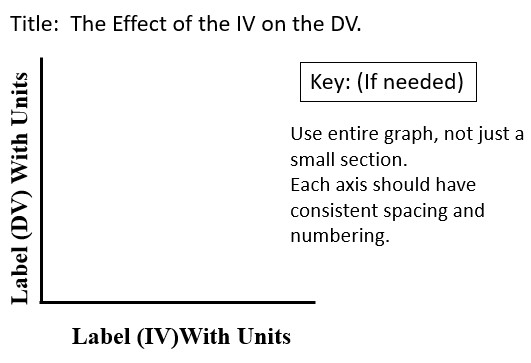

Goal 3: Graph the data from an experimental design experiment.

A graph is a pictorial representation of data used to show a relationship between two or more factors. Regardless of the type of graph used to display data, all graphs need to have the following properties:
a descriptive title, such as: The Effect of Independent Variable on Dependent Variable.
labels and appropriate units of measurement
legend or key if needed
equal spacing on the numbering scale
use of the entire graphing area
Line, Bar and Pie Graphs
A line graph has one or more lines connecting a series of data points.A bar graph uses a series of columns, or bars, to display data.
A pie chart is used to represent the parts of a whole.
Watch this video for more information about graphing and eperimental design.
Watch this summary video over exprimental design.